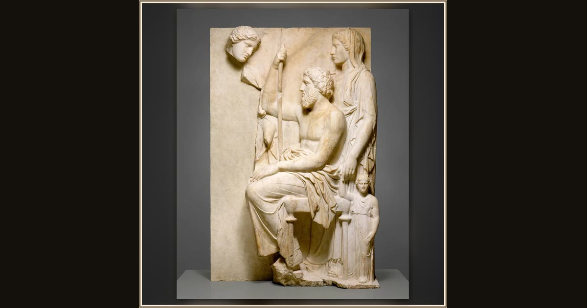

Marble grave stele with a family group
Greek, Attic · ca. 360 BCE · met
A marble grave stele shows a family group around a seated bearded man; Aristotle turns here to friendships between unequals, of father and son and of husband and wife (8.7). Explore its place in Aristotle's Nicomachean Ethics, Book VIII, section 7.